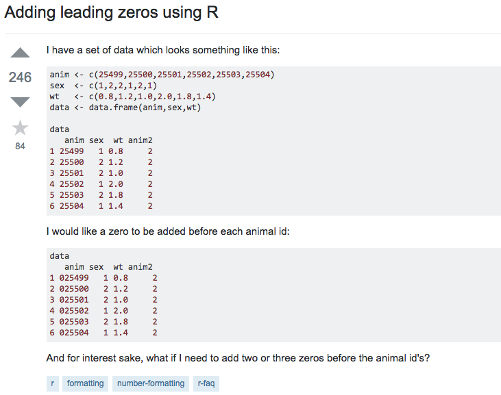
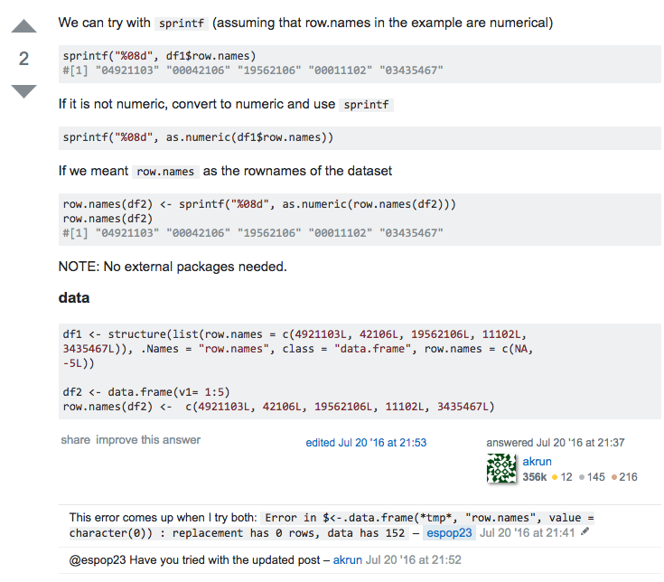
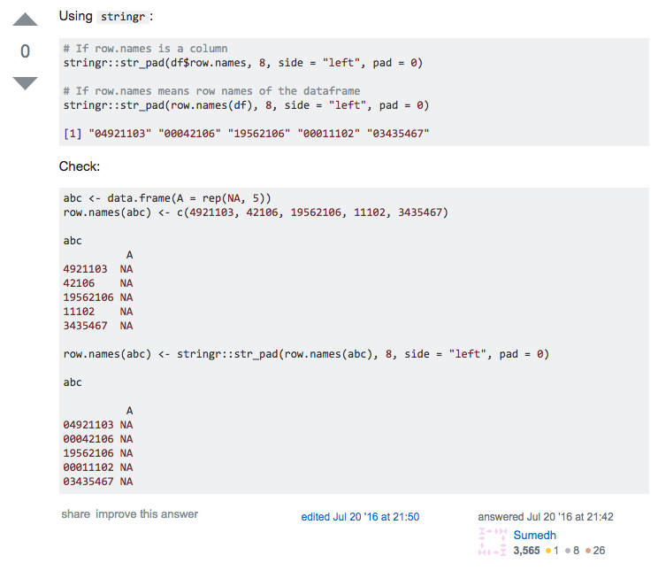
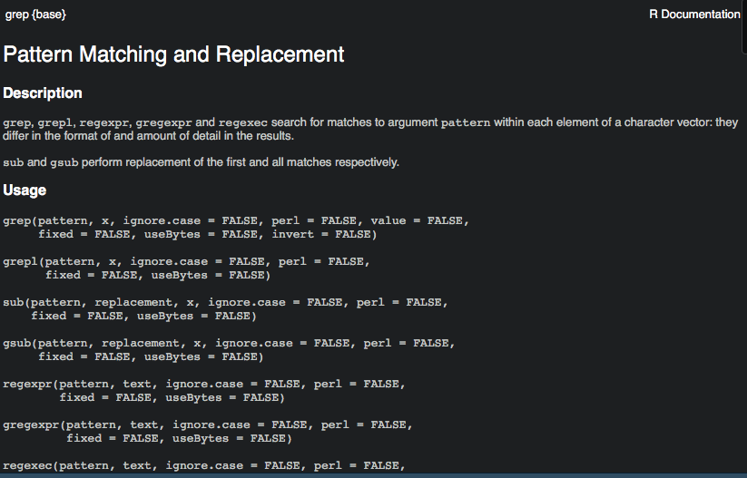
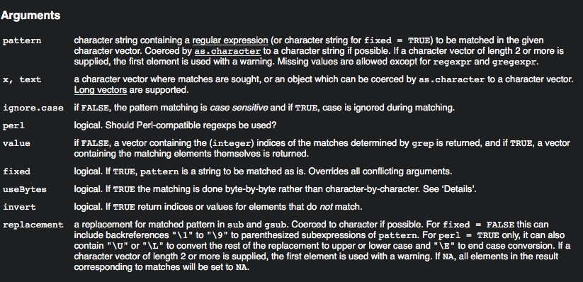
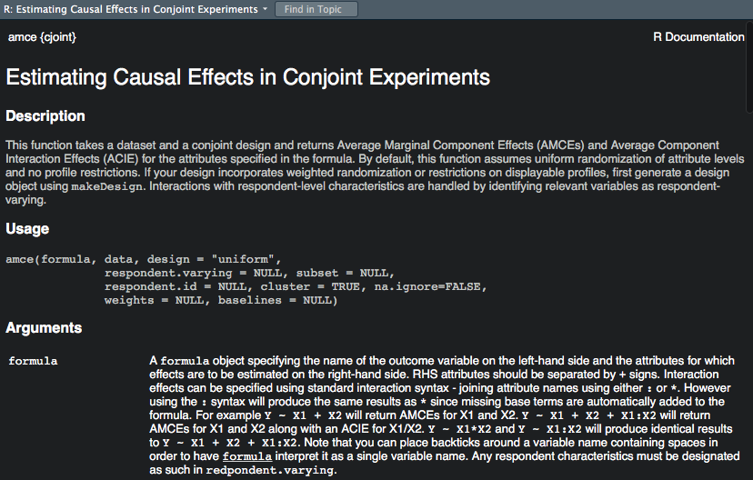
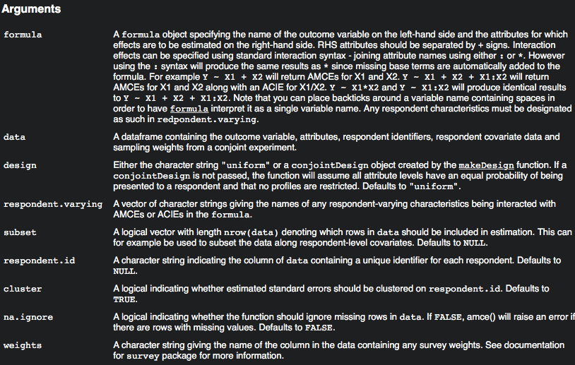
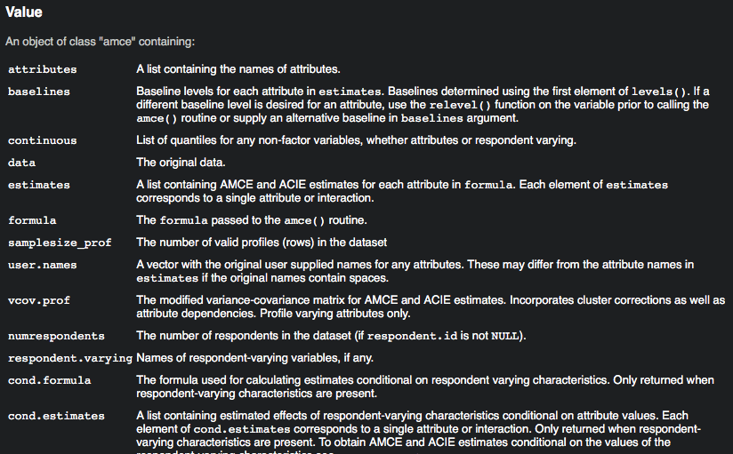
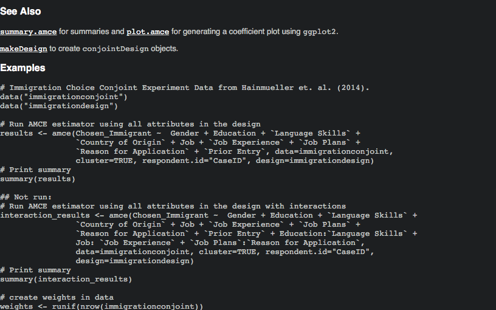

How to Read, Write, and Google for Success in Coding
Christopher Skovron and Jon Atwell
Northwestern University
June 20, 2018
Learning to do computational research involves learning to write and read different things than you are used to
You probably hear a lot about “clean” code
Most of that is bullshit and preening
- unless you are working in industry in a setting where things need to highly scale
- remember the point from Day One about human scale
In a year or five years, you will look back on your past self’s code and be horrified

Set yourself realistic goals in coding
- Acquire data
- Clean it in (tidy) forms ready for analysis
- Analyze
- Visualize and communicate
These goals animate today’s lesson, on how to teach yourself, and tomorrow’s lesson on “getting organized”
- These goals require lots of practice. Halfway between muscle memory and an art form
Reading and writing documents related to coding
- You will be reading new kinds of documentation, vignettes, examples, error messages
- These will seem confusing at first
- There are strategies, but nothing can beat practice
Your goals in writing code are more modest
- Does this do what I need it to do in a reasonably computationally efficient manner?
- Will my future self understand it?
- Will my collaborators and/or replicators understand it?
- Have I written in such a way that will prevent me from making mistakes? We will address each of these goals in order.
Code should be
- Easily understood by humans
- Relatively consistent
- Able to be adapted to new situations
Some resources to orient you to best practicies in writing code
- Read points 1-8 of this guide (specific to R but applies to other languages)
- Hadley Wickham’s R style guide
- Another good resource on R best practices.
Pick good names
- You might be tempted to use abbreviations or non-words to save yourself from typing the same characters over and over
- With modern IDEs, tab completion means this is not a big issue
- Choose names that are legible, clear, and precise
- Name functions what they do, name variables what they are
Good and bad names
In R, dots are common, underscores are ok:
## a few bad variable names from my past work
incspendtran
V101
gender # if coded as one or zero, as a factor I'd accept this
## better names
increase.spending.transportation
respondent.id
female # coded 1 if femaleSimilar variables should have similar names
- For example, my candidates’ perceptions of things always begin with
perc. - Next, geography, are they perceiving district,
perc.district, or state,perc.state - Sometimes they are perceiving opinion within a party:
perc.district.dem - Then the issue:
perc.district.dem.marriagemeans their district-level perception of support for same-sex marriage.perc.district.guns.banassaultis district-level support for banning assault weapons. There’s alsoguns.background.check…. - This lets me use things like
grep()to grab variables that are similar
Commenting
- Messages to all of your audiences – most importantly to yourself
- Say what you’re doing in plain words and why you’re doing it
- People differ a lot in their commenting preferences
- Find what’s comfortable for you, let it evolve
- A good rule of thumb - if it’s not obvious what’s going on from a quick skim of the code, comment it
Principles of good commenting
- Don’t comment things that are painfully obvious
- But most things won’t be painfully obvious
- Comment to introduce each new section of code or each major task
- If you write a new function, leave a comment explaining what it does
Introduce each new subsection of code with a comment
# plot partisan estimates against one another
# voters only
g = ggplot(ncs, aes(voted.pid7.dem)) +
geom_density(color = 'blue') +
theme_classic() +
theme(legend.position='none') +
xlim(0,1) +
theme(axis.title=element_text(size=8), plot.title = element_text(hjust=0.5, size = 10)) +
geom_density(aes(voted.pid7.rep), color = 'red') +
ggtitle("Distribution of electorate partisanship estimates") +
xlab("Percent of voters in district belonging to each party")More examples of comments form my code
### POSTSTRATIFICATION ###
# set up poststratification file and poststratify 2014 MRSP models
# level is upper or lower districts, pid.level is 3 or 7 point item
get.cell.predictions <- function(individual.model,
pid.var, # e.g., 'pid3.dem'
pstrat){
# district random effects need zeros for missing dists
district.ranefs <- ranef(individual.model)$modgeoid
missing.districts <- setdiff(unique(pstrat$modgeoid), rownames(district.ranefs))
missing.districts.df <- data.frame(district = missing.districts)
rownames(missing.districts.df) <- missing.districts.df$district
missing.districts.df$`(Intercept)` <- 0
missing.districts.df <- dplyr::select(missing.districts.df, -district)
district.ranefs <- rbind.data.frame(district.ranefs, missing.districts.df)
# NOTE: make sure AK and HI is workingMore comments from that R script
# divide within proportions grouped by party
# and district to get dist-party estimates
pstrat.upper = pstrat %>%
dplyr::filter(grepl("U", modgeoid)) %>%
cbind(upper.cell.predictions) %>%
dplyr::select(-X)
pstrat.lower = pstrat %>%
dplyr::filter(grepl("L", modgeoid)) %>%
cbind(lower.cell.predictions) %>%
dplyr::select(-X)Commenting sounds easy in the abstract
- You’ll be cruising along writing code (no, really, eventually you will) and not feel like stopping to write comments
- Things will seem really obvious when you write them despite being not obvious to those who come after, including your future self
- Consistently remind yourself to leave comments
How to find help
- Three problems:
- You don’t know where to start
- You write code and it gives the wrong output
- You write code and it throws an error
Error messages
- Can be helpful or inscrutable
- Often googling them will get you right to the solution or an explanation
- A guide on understanding the structure of R error messages
Expect to constantly be searching for help
- There’s way too much to remember, we offload that knowledge to the internet and elsewhere
- Messing up is the best way to learn when coding
- Get comfortable with spending a lot of time googling
Do due diligence before googling aimlessly
- You may be able to Google a solution, but that is sort of the being-given-a-fish way. You want to learn to fish.
- The best ways to teach yourself are to code a lot and read a lot of examples
- It’s a really slow process
Steal intelligently
- Figure out who’s doing similar tasks to you and look for tutorials online
- Steal people’s replication code (But be critical of it!)
How to read documentation
- Most documentation will show you a function and various parameters
- It’s important to understand different classes of data structures and variable classes in order to effectively use documentation
- In R, you’ll want to learn the differences between
Find vignettes and lessons written by others
- You’ll want to read package documentation, but more didactic examples are helpful too
- In R world these are called vignettes, you’ll also find “tutorials”
- Many github repositories have vignettes and usage examples attached to them.
- An example of a nice package vignette, for
broom - Another nice package vignette, for
dotwhisker
Build up a library of cheats
- Bookmark useful help pages
- Make yourself a notebook of examples of code. Have a dropbox folder where you save snippets that do tasks you frequently do.
- I have things like group-level proportions that I frequently do for summary statistics
- Also have my favorite ggplot settings, etc
- Pillage old code for new projects (But be careful! You or your software have probably improved, so writing it anew could be a good learning experience and/or improve efficiency)
Someone else has had your problem before
- You will almost never need to post your own question to a mailing list or to StackOverflow.
- Someone has had a similar problem before, you just need to know how to find it
- People might have similar but slightly different problems that you can
Figuring out your google query
- Most of the time, you’re going to want to end up on StackOverflow. Often it’s good just to search within SO
- Look for tutorials if you find yourself frequently using a package: If you find yourself working with lots of strings, set aside an afternoon to look at everything written on
stringr
Effectively searching StackOverflow
- I’ve found the best queries are action verb type things:
- Merge two data frames on multiple variables R
- Rename columns with similar names R
Googling tips
- Include your language!
- StackOverflow will know the letter R means the language. In some google queries you might want to
What you’ll find on StackOverflow

What you’ll find on StackOverflow

What you’ll find on StackOverflow

What you’ll find on StackOverflow

What you’ll find on StackOverflow

Use built-in help
?lm
?read.csv
?dplyr::renameBuilt-in help will
- Tell you how functions work, to varying degrees of helpfulness
- Often provide some examples of how functions work
- Often still leave you clueless and needing to Google around some more
Not-so-useful help

Not-so-useful help

Some builtin help is more useful

Some builtin help is more useful

Some builtin help is more useful

Some builtin help is more useful

Asking for help
- You will want a “minimal working example”
- Here’s a good guide for writing one in R from Jared Knowles
- The most efficient way to ask for help, in exponentially decreasing order: Ask Google, ask people you know, ask strangers online